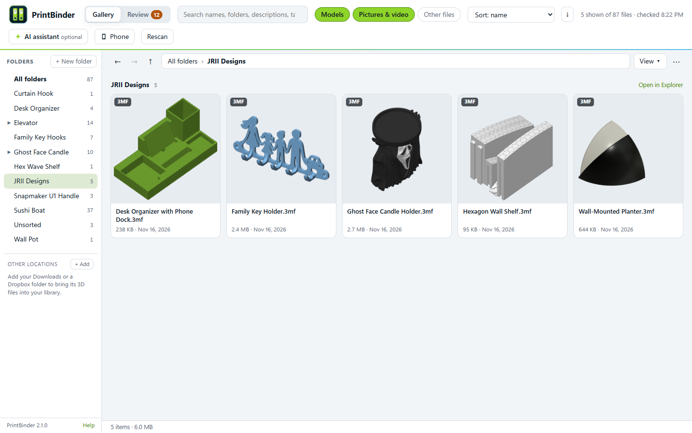
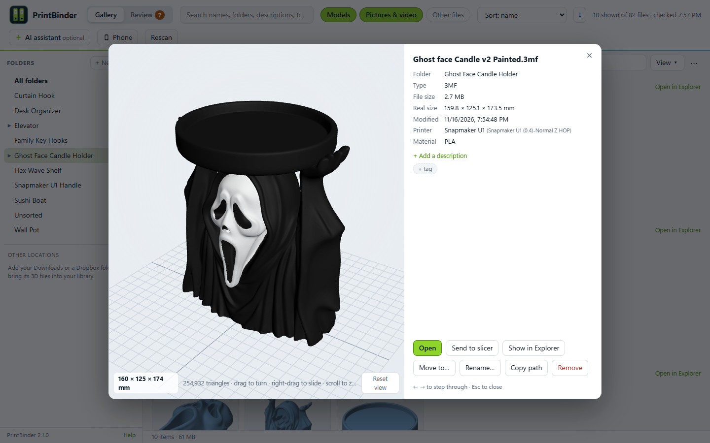
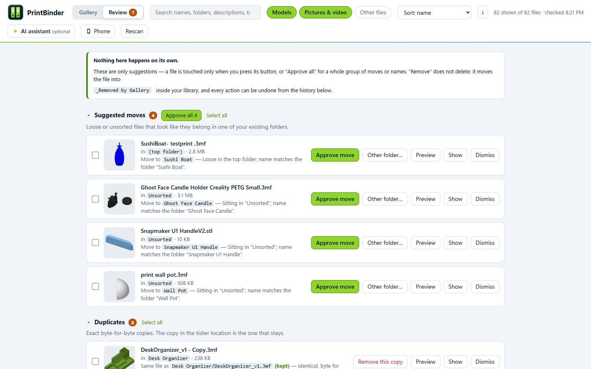
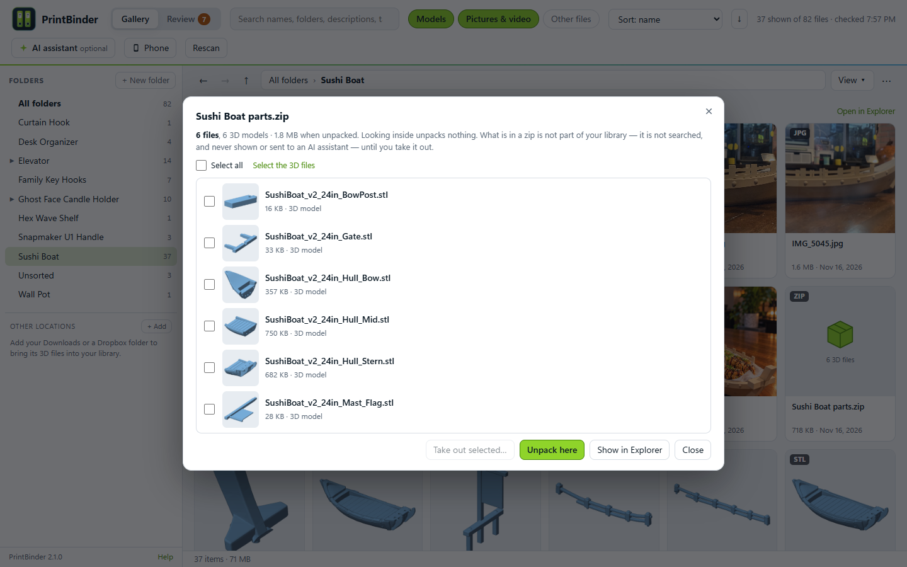

A look at it








What it does
It works on the folders you already have. There is no account and no sign-in.
-
Gallery
Previews for STL, 3MF, OBJ and STEP files, pictures and videos. Picture sizes from small to extra large, a Details list with sortable columns, and search.
-
3D viewer
Opening a model shows it in 3D with its measured size.
-
Filing the way Windows does it
Right-click menus, cut, copy and paste, drag and drop, F2 to rename, Delete to remove, and a Replace / Keep both / Skip choice when names clash.
-
Review
Exact duplicates, files that cannot be read, and suggested moves and names. Approve them one at a time, by group, or by ticking several.
-
Zip files
Open a zip to see its contents with previews, without unpacking. Take out the files you choose, or unpack it all into a folder beside it.
-
Send to slicer
Set up your slicers once and send a model to any of them.
-
Other locations
Show Downloads, another drive or a cloud folder beside your home library, and bring their files home. Moves between drives are copied, compared byte for byte, and only then removed from where they were.
-
USB drives
Plugging one in offers to copy or move its 3D files into the library.
-
Hidden folders
Leave a folder out of the gallery, search, Review and everything an assistant is shown.
-
Phone access (optional)
Pair a phone or tablet on the same home network with a one-time code and use your library from its browser. Off until you switch it on. Home network only, and not encrypted.
-
Help inside the program
A guide, every keyboard shortcut, what is new, and a privacy statement, all under Help.
The rules it keeps
-
Nothing moves until you say so
Nothing is moved, renamed or removed without your approval. Every suggestion waits in Review.
-
Remove never deletes
A removed file goes to a holding folder inside its library.
-
Everything can be undone
Ctrl+Z, or the history in Review. Ctrl+Y redoes.
-
Your files stay on your computer
Nothing leaves it unless you press a button that sends it to the AI service whose key you entered. Model files are never sent.
-
No account, no tracking
PrintBinder has no server of its own. It collects nothing about you or your library, and sends no usage figures or crash reports.
The one thing it does by itself is ask, at start, whether a newer version exists. That request says nothing about you or your library. The full privacy statement is in the program under Help > Privacy.
Optional AI help, with your own key
PrintBinder can work with Claude, ChatGPT or Gemini. You enter your own API key from the company that makes the assistant. A chat subscription to one of their apps does not include a key.
With a key, an assistant can:
- describe each preview picture, so search finds things whatever the file is called
- suggest clearer names
- suggest where files belong, and propose a tidier folder structure
- answer questions about your library
Everything it proposes goes to Review and waits for your approval.
Something is sent only when you press a button or send a message. It goes straight from your computer to the company whose key you entered. It can hold preview pictures, file and folder names, descriptions and tags, facts read from your files, and what you type. Model files are never sent. Hidden folders and the contents of zip files are never shown or sent.
The key is stored on your computer, encrypted by Windows for your user account. Without a key, none of the AI features appear and nothing else changes.
Installing
- Download the file named
PrintBinder-Setup-<version>.exeand run it. -
Windows will warn you.
The installer is not code-signed yet. Windows shows "Windows protected your PC" with an unknown publisher. Choose More info, then Run anyway. Your browser may also ask whether to keep the download; choose Keep.
- The setup wizard installs PrintBinder for your Windows account only. No administrator password is needed. It adds a desktop and a Start-menu shortcut.
- On first start PrintBinder asks for your home folder: the folder your 3D files live in, or an empty folder to start a library. It can be an ordinary folder or one inside a cloud-synced folder. Installing changes nothing in your folders.
Updating. Use Help > Check for updates. PrintBinder installs an update only when you press the button.
Uninstalling. Use Windows Settings > Apps. Your library is never touched.
Requirements. Windows 10 or 11, 64-bit.
What it isn't yet
- Windows only.
- Phone access is home network only and not encrypted. Use it only on a network you trust, never on public Wi-Fi.
- No print history or filament tracking.
Feedback
This is a first public release, so things will break. If something does, or you wish it did something it doesn't, write to info@printbinder.com. Ben reads all of it.
Source code and licence
PrintBinder is open source under the MIT licence. The code is at github.com/JRIIDesigns/printbinder.
You may use, change and share it, as long as the copyright line and the licence text stay with it. It comes with no warranty.
Claude, ChatGPT and Gemini are products of Anthropic, OpenAI and Google. PrintBinder is not affiliated with or endorsed by any of them.